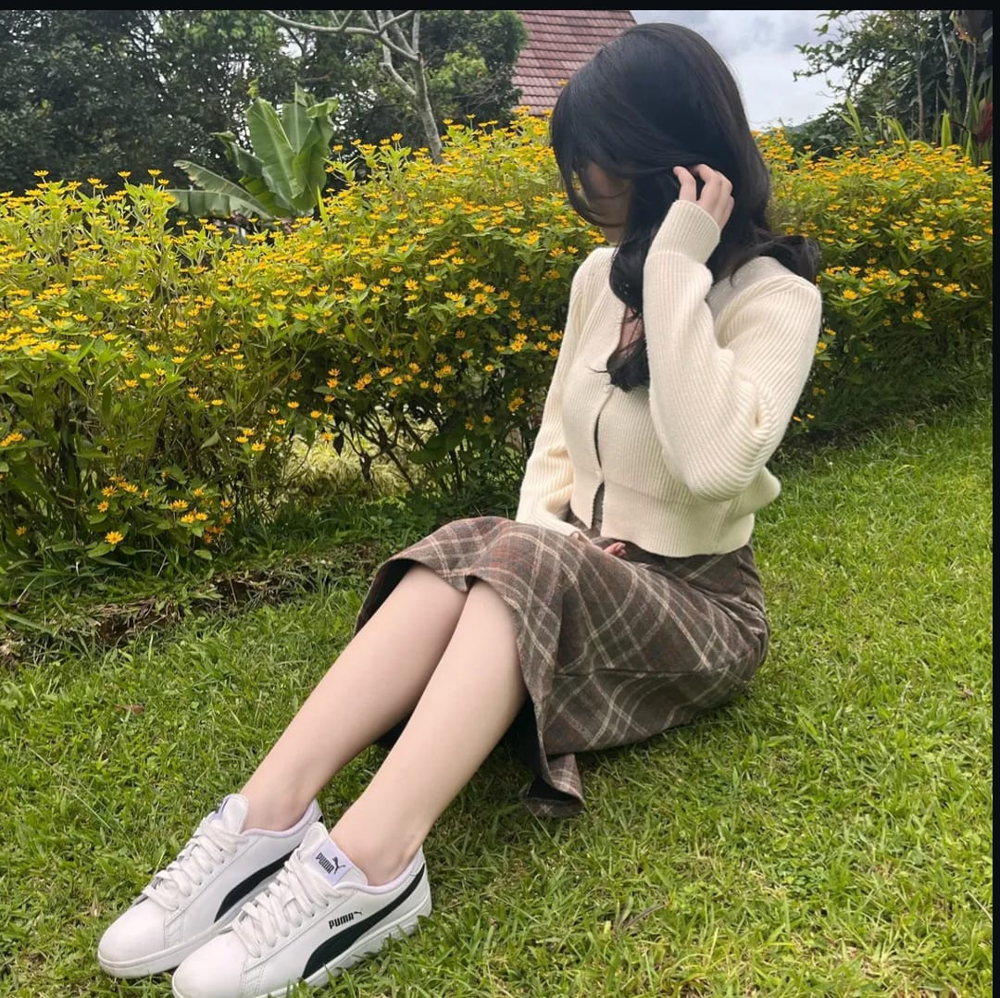

Cinta Aisyah
Sasikirana
Mahasiswi D3 Teknologi Telekomunikasi
✦ GRIMOIRE DIGITAL ✦
Cinta Aisyah
Sasikirana
Apprentice of Telecommunications & Digital Innovation
Halo! Saya Cinta — mahasiswi D3 Teknologi Telekomunikasi Telkom University yang sedang menempuh semester 4. Saya memiliki semangat tinggi dalam dunia telekomunikasi, elektronika, dan inovasi teknologi. Aktif sebagai Asisten Laboratorium Electronics Communication dan terlibat di berbagai kegiatan organisasi kampus.
Dari merancang sistem radio hingga membangun jaringan 5G — saya percaya setiap teknologi yang dibangun dengan sungguh-sungguh adalah karya yang mampu mengubah dunia. "Sihir terbaik lahir dari rasa ingin tahu yang tak pernah padam."
Pendidikan
Minat & Hobi
"Suka mendengarkan berbagai genre musik — dari jazz hingga pop — dan selalu penasaran mencoba hal baru di bidang teknologi dan inovasi."
Keahlian
📡 Telekomunikasi & RF
💻 Pemrograman & Digital